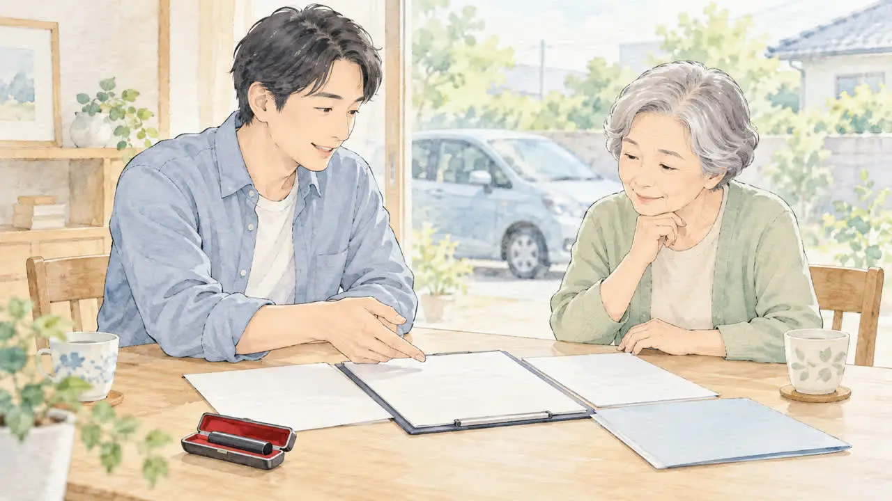
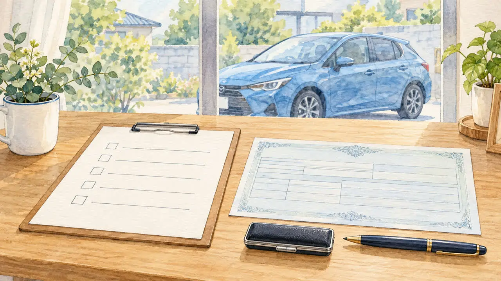
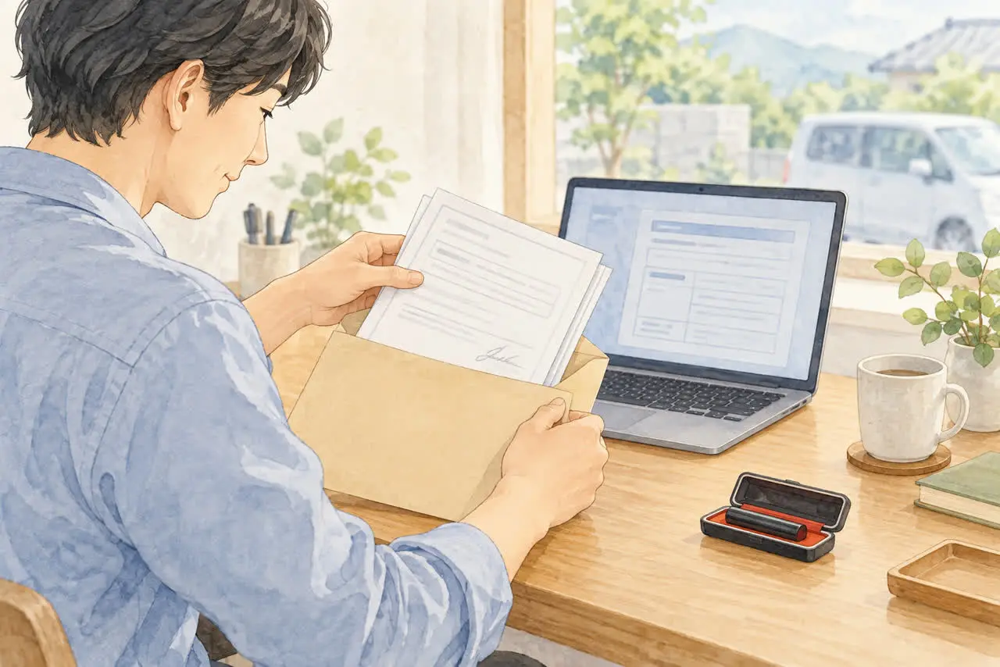

車の名義が違う方へ
名義が家族・知人のままの車を廃車したい
所有者と使用者が違うときの進め方
公開
こんにちは、東京都足立区江北で自動車解体・廃車買取をしている「大崎商店 環七店」です。
「私が乗っている車だけど、名義は親のまま」
「友人から譲ってもらった車で、名義変更をしていなかった」
「車検証を見たら、前の持ち主の名前だった」
廃車のご相談では、「車を使っている人」と「名義の人」が違うというご相談を、よくいただきます。
結論からお伝えすると、名義が違う車でも、廃車にできる場合があります。 ただし、車の持ち主として登録されている「所有者（名義人）」の協力が、基本的に必要です。
この記事では、名義が家族や知人のままの車を、廃車にするときの進め方を、やさしくご紹介します。後半では、足立区の大崎商店の場合もご紹介します。
① まず、車検証の「所有者」と「使用者」を確認しましょう

車検証には、「所有者」と「使用者」の欄があります。
| 車検証の項目 | 意味 | たとえば |
|---|---|---|
| 所有者 | 車の持ち主として登録されている人（名義人） | 親、前の持ち主、ローン会社 |
| 使用者 | 車を実際に使っている人 | ご自身、同居の家族 |
「名義が違う」というのは、所有者と、車を使っている方が、違うという意味です。
電子車検証は、所有者の情報が、券面に書かれていません。「自動車検査証記録事項」や「車検証閲覧アプリ」で確認してください。
廃車の手続きでは、所有者の情報（氏名・住所）が、基準になります。運転している人ではなく、車検証上の所有者が、手続きの中心です。
② 基本は、「名義人（所有者）」の協力が必要です

普通車の一時抹消登録・永久抹消登録を、紙の書類で申請する基本的なケースでは、所有者の印鑑登録証明書（発行から3か月以内）が必要です。所有者本人ではなく、代理人が申請する場合は、所有者が実印を押した委任状も必要です。
使用者が車を持っているだけで、自由に処分できるわけではありません。所有者の意思を確認し、申請方法に合った書類を準備する必要があります。 すでに一時抹消済みの車の解体届出などでは必要書類が異なるため、下の表だけで判断せず依頼先へ確認してください。
| 準備するもの | 誰の？ |
|---|---|
| 車検証 | 車に保管されているもの |
| ナンバープレート | 車についているもの |
| 印鑑登録証明書（発行から3か月以内） | 名義人（所有者） |
| 実印（委任状などへの押印） | 名義人（所有者） |
軽自動車は、普通車とは書類が異なります。所有者以外の方が手続きをする場合は、「申請依頼書」の提出が必要です。準備は、軽自動車の廃車に必要な書類・準備チェックリストの記事をご覧ください。
※手続きの組み合わせや、車の状態によって、必要な書類が変わる場合があります。取る前に、依頼先へ確認してください。
親御さんが免許を返納したあとの車については、「免許を返納した親の車、どう処分する？」の記事もご覧ください。
③ 名義人が、誰かによって変わること
名義人が誰かによって、進め方が変わります。
名義人が、親・兄弟などの家族のとき
まず名義人に処分の承諾を確認し、普通車では印鑑証明書の取得と、必要書類への実印の押印をお願いします。ご家族の協力が得られれば、通常の廃車と、ほぼ同じ流れで進められます。
印鑑証明書は、名義人の印鑑登録をしている市区町村で取得します。名義人ご本人に、取得をお願いしてください。取得の代理や、手数料は、市区町村によって異なります。
名義人が、友人・知人・前の持ち主のとき
「車を譲ってもらったが、名義変更をしていなかった」というケースです。
名義人に、書類の協力をお願いします。普通車では、友人・知人の場合も名義人の印鑑証明書と、必要書類への実印の押印が基本です。
使用者の名前に変更してから廃車する、という方法もあります。この場合は、名義変更（移転登録）の書類と、手続きが別に必要になります。どちらの進め方が適切かは、依頼先に相談してください。
名義人と、連絡が取れないとき
自己判断で、書類を作ったり、印鑑を押したりしないでください。 名義人の承諾なしに、書類に署名・押印することは、できません。
まずは、運輸支局や、手続きを依頼する会社に相談してください。連絡が取れない理由や、これまでの経緯、お持ちの書類（譲渡の記録、やり取りの記録など）を、整理して伝えると、相談しやすくなります。
名義人が、亡くなっているとき
相続の手続きが必要になることがあります。くわしくは亡くなった家族の車を廃車するときの手続きの記事をご覧ください。
名義人が、ローン会社・ディーラーのとき
所有権留保の場合です。ローン会社に確認が必要です。くわしくはローンが残っている車は廃車できる？の記事をご覧ください。
④ 名義変更をしてから廃車する？そのまま廃車する？
所有者が変わらず、名義人が廃車を依頼する場合は、その名義で抹消登録する方法があります。すでに売買・譲渡をしている場合は、登録名義だけを見て決めず、実際の所有関係を依頼先へ伝えてください。一方、次のような事情があるときは、所有者を変える手続きと、永久抹消を、あわせて行う方法もあります（移転永久抹消登録）。
- 譲渡のあと、名義変更をしないまま、車を解体することになった
- 車を引き取る業者に、所有者を変えて手続きしてもらう
この場合は、旧所有者（名義人）の委任状と印鑑証明書、譲渡証明書などが、必要になります。必要な書類は、手続きの組み合わせで変わります。依頼先に、「名義が違う」とお伝えして、確認してください。
⑤ 税金や還付金は、誰が受け取る？
名義人と使用者が違うと、お金の受け取りも、確認が必要です。
- 自動車税（普通車）：原則として4月1日時点の登録上の所有者に課税されます。ただし、ローン会社などが所有権を留保している場合は、使用者が納税義務者になります。抹消による還付は、原則として納税義務者が対象です。実際に支払った人へ自動的に返るとは限りません
- 重量税の還付：最終所有者が申請する制度です
- 自賠責保険の返戻金：契約している方（契約者）の確認が必要です
制度上の申請者・受領者を確認したうえで、名義人・使用者・依頼先の間で、誰がどの手続きをして、返戻金をどう扱うかを話し合っておきましょう。受取人を変えたり代理受領を依頼したりする場合は、別途委任などが必要になることがあります。軽自動車税には、年度途中の廃車による月割り還付はありません。くわしくは廃車にするとお金は戻ってくる？自動車税・重量税・自賠責の還付金の記事をご覧ください。
⑥ 委任状や譲渡証明書は、どこで手に入る？
名義人の方に書いてもらう「委任状」や「譲渡証明書」は、次の場所で手に入ります。
| 書類 | 手に入る場所 |
|---|---|
| 普通車の譲渡証明書（第21号様式） | 国土交通省・譲渡証明書（PDF）から印刷できます。記入例（PDF）も確認できます |
| 普通車の委任状（永久抹消登録・解体の届出用など） | 国土交通省・委任状（永久抹消登録・解体の届出用PDF）から印刷できます。手続きに合う様式を依頼先に確認してください |
| 軽自動車の申請依頼書 | 軽自動車検査協会・申請依頼書の一覧から印刷できます。解体返納・解体届出は「様式3」が対象です |
手続きを依頼する会社が、用意してくれる場合も多くあります。
ダウンロードする前に、依頼先へ確認してください。 書類によって、書く内容（受任者の欄など）や、使う様式が、決まっている場合があります。名義人の方の署名・実印の押印が必要な欄もあります。
委任状や譲渡証明書の書き方は、「廃車の委任状・譲渡証明書の書き方」の記事でご紹介しています。
⑦ 手続きの前の、準備チェックリスト

- □ 車検証（または自動車検査証記録事項）で、所有者と使用者を確認した
- □ 名義人が誰か、連絡が取れるかを確認した
- □ 名義人に処分の承諾を確認し、必要書類への協力をお願いした（普通車では印鑑証明書・実印が基本）
- □ 名義人の住所・氏名が、車検証と一致しているか確認した（違う場合は、つながりの書類が必要です）
- □ 印鑑証明書は、手続きの時期が決まってから取る（発行から3か月以内）
- □ 依頼先に、「名義が違う」と伝えた
印鑑証明書については、廃車に必要な印鑑証明書は何通？いつまでのものが使える？の記事を、住所や名字が違う場合は、車検証と今の住所・名前が違う場合の廃車手続きの記事をご覧ください。
手続きの日数については、廃車手続きはどれくらいで終わる？日数の目安と、早く終わらせるコツの記事をご覧ください。
よくある質問
Q. 名義が親のままです。親の協力がなくても廃車できますか？
A. 普通車では、基本的に名義人（所有者）の印鑑証明書と、実印を押した書類が必要です。軽自動車も、所有者の意思と必要書類を確認して進めます。名義人の協力が得られない場合は、運輸支局や依頼先に、ご相談ください。
Q. 友人から譲ってもらった車で、名義変更をしていません。そのまま廃車できますか？
A. 名義人の承諾と必要書類（普通車では印鑑証明書、実印を押した書類など）があれば、進められる場合があります。名義変更してから廃車する方法もあります。依頼先に、状況を伝えて相談してください。
Q. 前の持ち主と連絡が取れません。
A. 自己判断で、書類を作ったり、印鑑を押したりしないでください。運輸支局や依頼先に、経緯を整理して、相談してください。
Q. 名義人が遠方に住んでいます。どうすればいいですか？
A. 印鑑証明書の取得や、書類への押印をお願いする必要があります。進め方は、依頼先によって異なるため、先に相談してください。
Q. 軽自動車の場合も、名義人の協力が必要ですか？
A. 軽自動車は、普通車と書類が異なります。所有者以外が手続きをする場合は、申請依頼書の提出が必要です。実印や印鑑証明書は、通常の廃車では不要です。依頼先に、確認してください。
Q. 還付金は、誰のものですか？
A. 自動車税の還付は原則として納税義務者が対象です。所有権留保の場合は使用者が納税義務者になるため、登録上の所有者と一致しないことがあります。重量税は最終所有者が申請し、自賠責は契約者と保険会社への確認が必要です。名義人・使用者・依頼先で、手続きと受け取り方を先に確認してください。
大崎商店の場合：名義が違う車のご相談
ここからは、足立区の大崎商店の場合をご紹介します。
名義が違う車のご相談も、お受けしています。お電話の際に、次の内容をお伝えください。
- 車検証（または自動車検査証記録事項）の所有者・使用者
- 名義人と、ご自身の関係（親、兄弟、友人、前の持ち主など）
- 名義人の方のご協力が得られるか
- 車種・車の状態・車が置いてある場所
委任状や譲渡証明書は、国土交通省などの公式様式のうち、当店が指定するものをお使いいただきます。名義人の方の印鑑証明書と、実印での押印が必要になる場合は、取得の時期と、押印のタイミングを、お伝えします。
名義人の方が遠方のとき

名義人の方が遠方で、来店が難しい場合も、郵送でやり取りができます。車を処分する前提のため、委任状や譲渡証明書は、ネットからダウンロードして、印刷し、名義人の方に記入・押印してもらったものを、当店へ郵送していただく方法が、いちばんスムーズです。
- ダウンロードする様式は、国土交通省などで公開されているものです。どの様式を使うかは、当店からお知らせします
- 委任状の受任者の欄は、空欄のままで構いません
- ダウンロードと印刷ができるかを、先にご確認ください。難しい場合は、お電話で、ほかの方法をご相談ください
- 記入の仕方や、印鑑証明書の同封については、お電話でご案内します
- 印鑑証明書は、手続きの時期が決まってから取得してください
名義人の方のご都合が悪い場合や、連絡が取りにくい場合も、書類を取る前に、まずはお電話でご相談ください。
当店は車の引き取り・買取に伴う一時抹消・永久抹消に対応しています。車をお預かりせず、書類手続きだけを代行するご依頼は受け付けていません。車として再販売する場合は一時抹消、解体する場合は永久抹消（すでに一時抹消済みなら解体届出）を行います。解体する車でも、部品や資源として買取価格がつく場合があります。
大崎商店では、
- 解体費用・手続き代行費用・印紙代は別請求しません
- 買取価格がつかない車も、環七店から片道約30分圏内は引き取り無料
- 買取価格がつく車は、圏外でも、所在地と車の状態によっては無料で引き取り（事前にご案内します）
- 車のお持ち込みは、どこからでも歓迎（基本は環七店。日時は、事前にお電話でご相談ください）
名義が違う車のことも、大崎商店にご相談ください
電話で相談する 03-3854-4141メールで相談する（フォーム）ご来店の前に、お電話ください。引き取りなどで外出していることもあり、お電話いただければ、受け入れの可否や、ご案内できる日時をお伝えできます。
大崎商店 環七店
電話：03-3854-4141
〒123-0872
東京都足立区江北7丁目1−3
営業時間：月〜土 10:00〜18:00
休業日：日曜・祝日
環七沿い／舎人ライナー
西新井大師西駅
大崎商店 入谷店
電話：03-3899-2837
〒121-0836
東京都足立区入谷7丁目5−11
営業時間：月〜土 9:30〜17:30
休業日：日曜・祝日・第2土曜
引き取りやご相談のお電話は、環七店がスムーズです。お電話の際は、「車の名義が違う」とお伝えください。車検証（または自動車検査証記録事項）をお手元にご用意いただくと、ご案内がスムーズです。
※掲載のイラストはAIで作成したイメージです。実際の店舗・役所の窓口を撮影したものではありません。
参考：東京都主税局・自動車税／国税庁・自動車重量税の廃車還付制度／国土交通省・一時抹消登録の必要書類／国土交通省・譲渡証明書（第21号様式）／国土交通省・委任状（永久抹消登録・解体の届出用）／軽自動車検査協会・申請依頼書／国土交通省・車の使用を一時中止するために必要な書類／国土交通省・車を一時使用中止・解体・輸出するためには／国土交通省 自動車保有関係手続のワンストップサービス・移転永久抹消登録（還付あり）の必要書類／軽自動車検査協会・解体返納